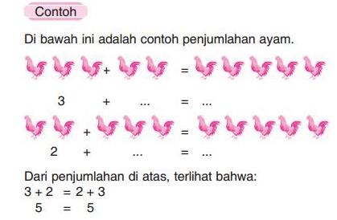
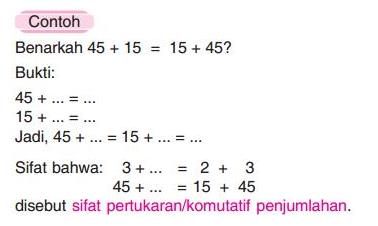

Matematika SD Kelas 4
Pada bab ini akan dibahas tentang “operasi hitung bilangan”. Apakah yang dimaksud dengan operasi hitung bilangan itu? Mari memperhatikan cerita di bawah ini. Amir memiliki 15 kelereng, Andi memiliki 25 kelereng, Asep memiliki 18 kelereng, dan Rangga memiliki 30 kelereng. Berapa jumlah kelereng keempat anak tersebut? Siapakah yang memiliki kelereng paling banyak? Siapakah yang memiliki kelereng paling sedikit?
Perhatikan contoh di bawah ini:
Perhatikan contoh lain di bawah ini:
Provided by
FitrahDarmawan